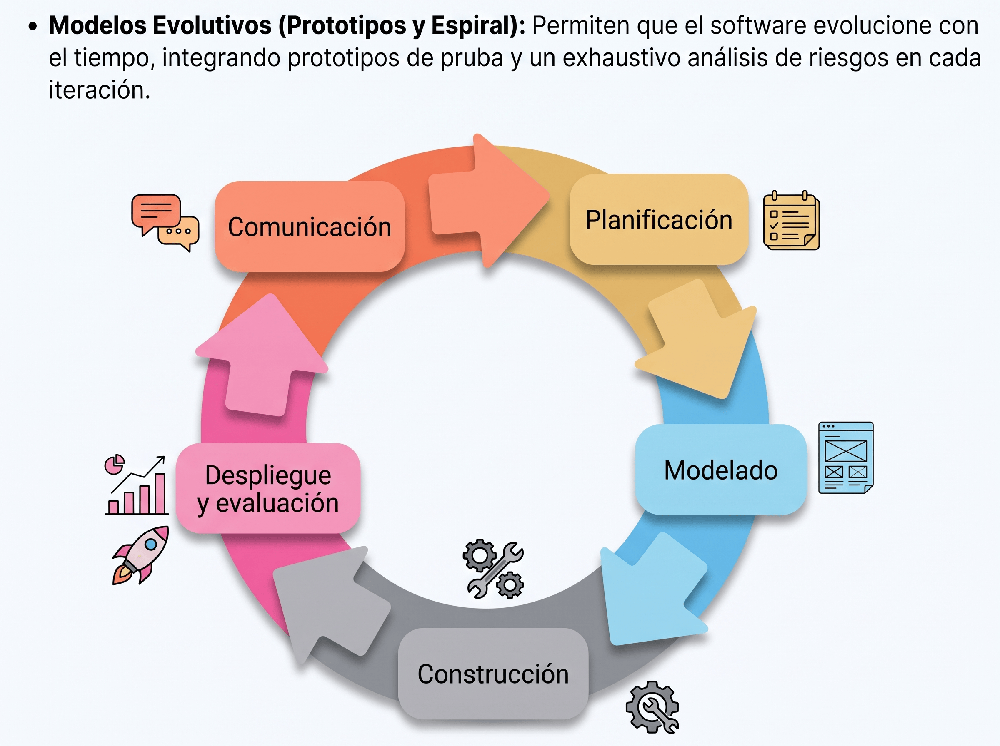

1. ED. Mostrar modelos de ciclo de vida del software.
Ciclos de Vida del Software
Según Piattini et al. (2007), el ciclo de vida del software es "la descripción de las distintas formas de desarrollo de un proyecto o aplicación informática, es decir, la orientación que debe seguirse para obtener, a partir de los requerimientos del cliente, sistemas que puedan ser utilizados por dicho cliente".
- Modelo en cascada:
- ¿Qué es? Es el modelo de ciclo de vida más primitivo y fundamental. Propone un enfoque sistemático y secuencial: se comienza con el análisis y se continúa a través del diseño, la programación y las pruebas hasta el software terminado y su mantenimiento.
- Funcionamiento y Revisiones: Para pasar de una fase a otra se deben cumplir ciertos objetivos y superar un proceso de revisión formal (principalmente sobre la documentación). Si se detectan errores de fases anteriores, se permite volver hacia atrás para corregirlos.
- Ventajas: Es fácil de comprender, de planificar y de seguir.
- Inconvenientes (según Pressman, 2010):
- Los proyectos reales rara vez siguen un flujo totalmente lineal; los cambios generan confusión conforme el proyecto avanza.
- Es difícil que el cliente enuncie todos los requisitos al principio. Cuanto más tarde se detecte un fallo en una fase previa, más costoso será solucionarlo.
- El cliente debe tener mucha paciencia, ya que no dispondrá de una versión funcional del programa hasta que el proyecto esté muy avanzado.
- ¿Cuándo se usa hoy en día? Dado que el software está sometido a continuos cambios, no suele ser apropiado, salvo en aquellos proyectos donde no es previsible que se produzcan cambios en los requisitos.

- Modelo de Proceso Incremental:
- ¿Qué es? Un modelo donde el desarrollo de software se concibe mediante la producción de diversos incrementos o entregables parciales.
- ¿Cómo funciona? En lugar de esperar al final del proyecto, se proporciona cierta funcionalidad parcial al cliente y se va aumentando en entregas posteriores. Para elaborar cada incremento, se aplican las actividades clásicas (análisis, diseño, programación, pruebas y mantenimiento).
- Ventajas / Cuándo usarlo: Es muy recomendable cuando los requisitos no están bien definidos desde el principio y es muy probable que cambien, ya que reduce los riesgos de retrasos y facilita la retroalimentación del cliente.

- Modelos de Proceso Evolutivo (Construcción de Prototipos):
- ¿Qué es? Modelos iterativos que se caracterizan por el desarrollo de versiones cada vez más completas del software, entendiendo que los requisitos del negocio cambian con el tiempo.
- ¿Cómo funciona (Prototipos)? Se construye un sistema auxiliar (prototipo) para probar experimentalmente soluciones parciales o la interacción hombre-máquina. El proceso sigue un ciclo iterativo de: Comunicación con el cliente -> Planificación -> Modelado (diseño rápido) -> Construcción del prototipo -> Despliegue y evaluación.
- Tipos y cuándo usarlo: Los prototipos pueden ser desechables (se usan solo para aclarar ideas y se tiran) o evolutivos (se transforman poco a poco en el sistema real). Es ideal cuando el cliente tiene objetivos generales pero no puede identificar los requisitos en detalle.

- Modelo en Espiral:
- ¿Qué es? Un modelo evolutivo avanzado diseñado para combinar las mejores características del modelo en cascada y de los prototipos, añadiendo un pilar fundamental: el análisis de riesgo.
- ¿Cómo funciona? El software se desarrolla en una serie de entregas representadas como vueltas alrededor de una espiral. Cada ciclo o vuelta se divide en cuatro cuadrantes de tareas:
- Planificación: Identificar objetivos, alternativas y restricciones.
- Análisis de riesgo: Evaluar alternativas para elegir la más ventajosa y prevenir problemas.
- Ingeniería: Desarrollar el producto (análisis, diseño, código) para obtener una versión más completa.
- Evaluación: El cliente valora el resultado y se decide si se continúa con la siguiente iteración.
- Ventajas e Inconvenientes: Su gran ventaja es que previene problemas graves gracias al control continuo de riesgos. Su principal inconveniente es que requiere mucha experiencia en la evaluación de riesgos para tener éxito.